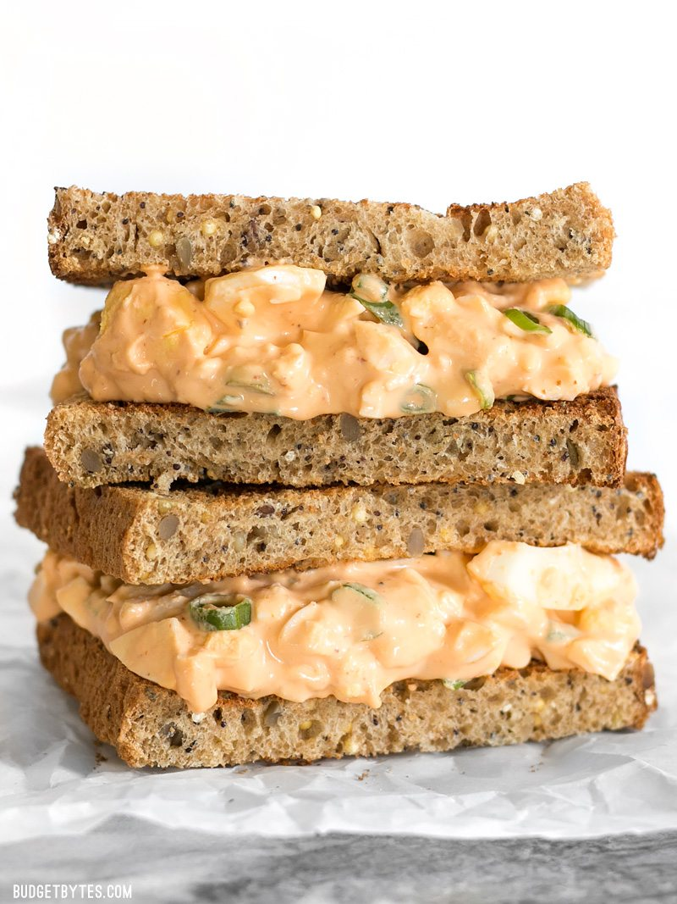

Time: 30 minutes
Cost: $3.11
Servings: 2
1. Place the eggs in a large sauce pot and add enough water to cover them by one inch. Place a lid on the pot and bring to a boil over high heat.
2. Once it reaches a full rolling boil, turn off the heat and let it sit with the lid in place for 15 minutes.
3. After 15 minutes transfer the eggs to an ice water bath to stop the cooking process. Let the eggs sit in the ice water for 5-10 minutes before peeling. While the eggs are cooking, prepare the dressing. Combine the mayonnaise, sriracha, salt, lemon juice, and some freshly cracked pepper in a bowl.
4. Finally, slice the green onions and peel the eggs. Coarsely chop the eggs, place them in a large bowl with the sliced green onions, and pour the dressing over top. Stir to combine, then serve or refrigerate until ready to serve.
Source: https://www.budgetbytes.com/2017/03/sriracha-egg-salad/"